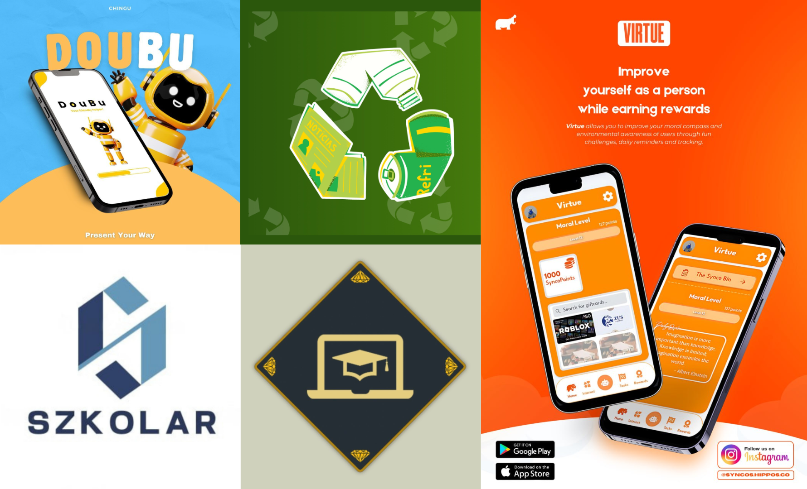
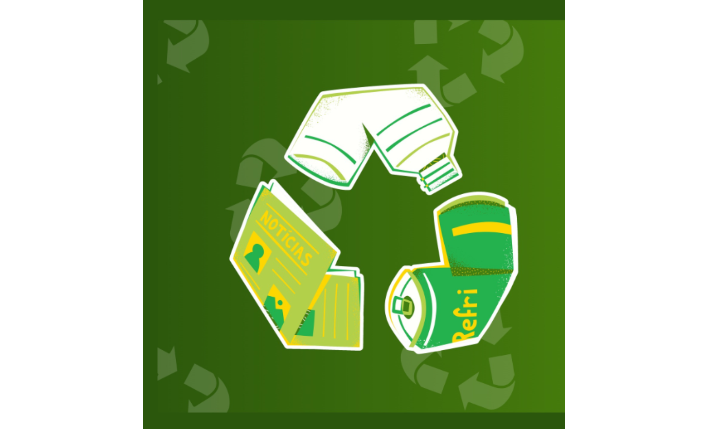
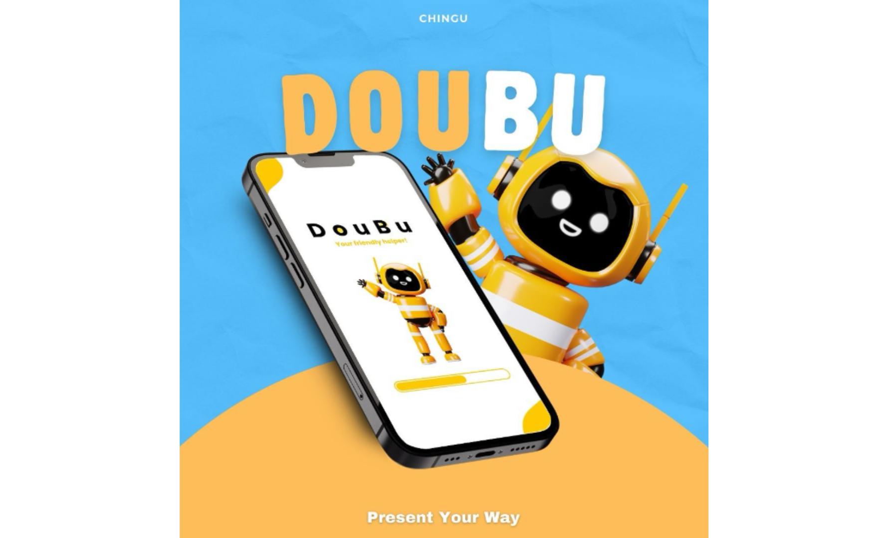
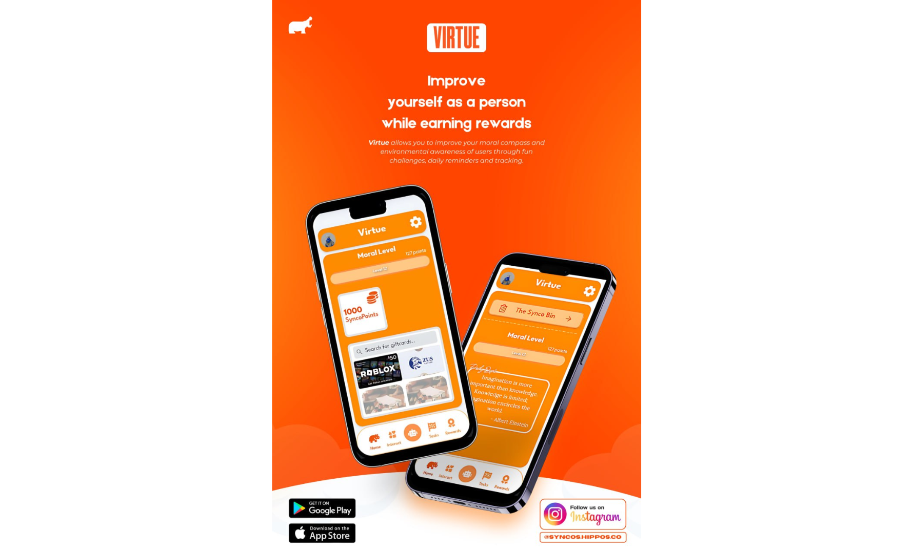

TOP 5 Mobile Apps: STUDENTS Must Have!
Author: Ammar Aqeel | Date: December 10, 2024
No.5: Sztellar by Szkolar
Traditionally, people have relied on a variety of physical tools and methods to manage their
academic work. This includes using books and files to organize assignments, lecture notes,
handouts, and quizzes. To ensure they meet deadlines for assignments, individuals often rely on
personal reminders, such as planners or calendars. Lecture notes are typically taken with paper
and pens, which can result in a large accumulation of physical notes over time. Additionally,
maintaining files to store and organize handouts and notes from lecturers is a common practice.
This often involves purchasing multiple books specifically for note-taking and various files to
sort these notes according to different subjects and topics. Furthermore, to reinforce their
understanding of the material, individuals frequently buy activity books for personal revision
and quizzes.
This traditional system of managing academic work involves a significant amount of manual
effort and organization, requiring individuals to juggle multiple resources and keep track of
various physical items to stay on top of their academic responsibilities. This approach can be
both costly and time-consuming. The need to purchase multiple books, files, and other supplies
can quickly add up, making it a pricey endeavor. Additionally, the effort required to search for
the right stores and find the specific materials needed can be quite burdensome. Keeping track
of all the work becomes increasingly challenging due to the numerous pages containing
different subjects and topics. This complexity often leads to misplacement and forgetfulness, as
it is difficult to maintain an organized and efficient workflow with so many physical items to
manage. The inherent complexity and physical nature of this system make it hard to sustain an
organized and streamlined approach to academic work. As a result, individuals frequently
struggle to keep track of all their tasks, leading to the misplacement of important documents
and notes, which ultimately contributes to inefficiency and forgetfulness.
In the modern age, people commonly use devices such as laptops, computers, tablets, and
mobile phones to manage their academic and professional tasks. Utilizing an app for this
purpose is also environmentally friendly, as it reduces the need for paper and files, which come
from trees that have been cut down. Therefore, it is more logical and sustainable for people to
handle their assignments online through an app. Introducing Sztellar, a new task-management
app designed to help you organize your assignments according to your preferences. Whether
you are a teacher giving out assignments or a student managing your workload, Sztellar is an
ideal tool for everyone. Teachers can effortlessly distribute assignments, share notes, and hold
quizzes, while students can easily keep track of their tasks, organize their notes, and stay on top
of their academic responsibilities. Sztellar is designed to be intuitive and user-friendly, making it
accessible for all users to fully utilize its features and streamline their academic workflows.
Follow the developer's Instagram to learn more about this app! @szkolar.co
No.4: LearnStream by LitEdu
Before this, students would most likely use workbooks and join extra classes to further
understand mathematics. This was one of the most effective ways to make students improve
their knowledge about mathematics back then. They can ask their friends in the extra class and
even have a one-on-one session with their teacher. Even though these methods do help
students understand more, student athletes have it different. They put more of their focus on
their training for tournaments rather than studying. It’s not that they are refusing to study at all,
but all of the training fills up their daily schedule and makes it harder for them to manage their
time for academics and curriculum.
But now, gadgets are everywhere. Almost everyone that you know of has some sort of
device of theirs. While the popularity of gadgets has risen around the world, there was
something in the gadgets that made especially kids and teenagers addicted to it. GAMES.
Games are a way for people to have fun without going anywhere that is nearly far. There are a
plethora of games in the app store of devices to download. This makes the youth waste most of
their time playing games instead of focusing on their academics.
In order to solve this problem, we need a product or an app that can store all the
learning material and even quizzes. To make students more interested, we can add games.Our
app helps you learn mathematics while playing simple sport games. These simple sport games
are to help the user get hooked to the app while learning mathematics topics.
Follow the developer's Instagram to learn more about this app! @litedu.k7
No.3: EcoCycle by WeThink
Incorporating the 5 R’s (Refuse, Reduce, Reuse, Repurpose, and Recycle) into daily life offers
numerous benefits. These principles help protect the environment by reducing pollution,
conserving natural habitats, and decreasing greenhouse gas emissions. They ensure the
sustainable use of resources, preserving them for future generations. Economically, they save
money by reducing the need for new materials and decreasing waste disposal costs.
Additionally, these principles foster community engagement, encouraging collective action and
responsibility towards a sustainable future. By adopting the 5 R’s, individuals and communities
can significantly contribute to environmental sustainability and resource conservation.
Recycling involves the practice of separating items like paper, glass, plastic, and cans, rinsing
containers to prevent contamination, and following local recycling guidelines. People utilize
curbside pickup or drop-off points at recycling centers and often find convenient bins at stores
for items like plastic bags. This process is crucial for reducing waste and conserving resources,
contributing to a sustainable environment.
While recycling is crucial for environmental sustainability, it can be challenging due to the lack of
readily available information. Individuals often face difficulty finding reliable DIY videos to learn
proper recycling techniques, as guidelines can vary widely by location. Additionally, locating
nearby recycling drop-off centers or understanding local recycling policies can be complex and
time-consuming. These obstacles underscore the need for clearer, more accessible information
and infrastructure to support effective recycling practices.
Therefore, to overcome this problem, we develop EcoCycle,a mobile app designed to modernize
recycling, educate users about sustainable practices, and build a community dedicated to
environmental conservation. Instead of relying on conventional methods like searching for DIY
videos and locating recycling centers on your own, EcoCycle simplifies the process for all users.
Whether you're a student recycling used stationery or an adult disposing of old decorations
responsibly, EcoCycle reduces waste and promotes environmental learning, making recycling
easier and more accessible.
Follow the developer's Instagram to learn more about this app! @ecocycle.app
No.2: Doubu by Chingu
A tutor is an individual who provides personalised instructional support and guidance to students in
various subjects or skills. The primary role of a tutor is to enhance a student's understanding of
specific topics, improve their academic performance, and build their confidence. Tutors can work
with students of all ages, from elementary school through college and even adult learners.
Offline tutoring typically requires both the tutor and student to be physically present at the same
location, which can limit scheduling flexibility and requires time to travel to meet with each other.
Coordinating schedules between tutors and students can be challenging, especially if the tutor has
multiple clients or other agendas of their own. Offline tutoring often includes additional costs such
as travel expenses and higher hourly rates.
Users of DouBu are able to upload a video of their presentations in the app. After that, the app’s
integrated AI will proceed to analyse the video uploaded thus giving feedback and guidance to
enhance the user’s presentation. DouBu can evaluate a user's body language, uses of words and
facial expressions. In addition, DouBu would also give users a confidence boost by providing
comments concerning their presentations! Not forgetting to mention, DouBu also provides users
with tutorial videos that they can watch by scrolling through the app.
Conclusively, for students who need help in presenting their slides or projects, it is very recommended for them to use Doubu.
The Chingu AI mechanism can help detect students' problem and helps them improve their performance deficiency.
Follow the developer's Instagram to learn more about this app! @ChinguBot
No.1: Virtue by Syncos
Being a morally good person is the biggest achievement that anyone could have. It means that
you possess positive traits such as honesty, responsibility and courage to step up for what is
right. However, many people such as young teenagers and adults still face unique challenges
that can make it difficult for them to consistently adhere to moral principles.
With the rise of educational apps in the world due to the spike of digital usage, a good portion
of the young generation finds these apps to be very useful in their daily life and therefore
regularly use them.Syncos have devised a solution for teenagers and young adults to develop a
strong moral compass while also following the trends, being educational, and implementing
“gamification” with a high reward: Synco Virtue.
Gamification is the new meta for mobile apps these days. In Synco Virtue, users can
complete different challenges such as walking while picking up litter or planting a tree.
Users first take an initial picture, then complete the challenge (such as by walking or
waiting 2 weeks for a tree to grow), and then finishing the challenge with a reward such
as moral points (the more work required the higher) or even SyncoPoints. Users can also
post on their feed after finishing said challenges.
In conclusion, VIRTUE is a greatly ideal app for students who want to improve themselves and gain multiple benefits from their efforts.
On the broader aspect, efforts made by users are in conjunction with the nations of the world in improving better life quality, contributing
in major SDGs promoted by the UN.
Follow the developer's Instagram to learn more about this app! @syncos.hippos.co